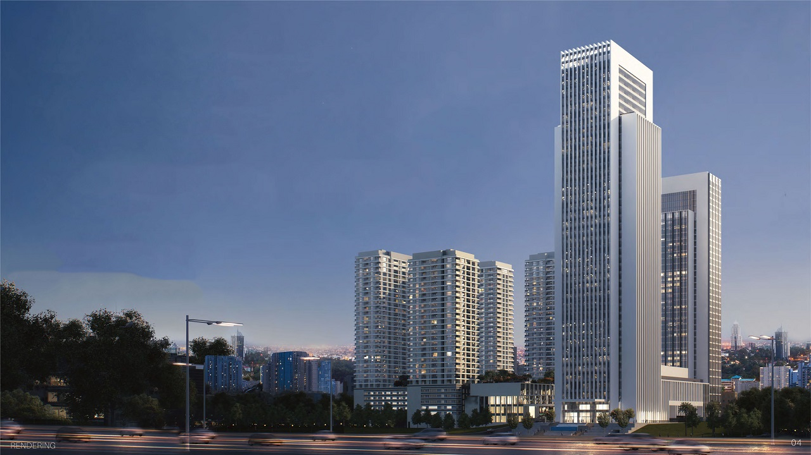
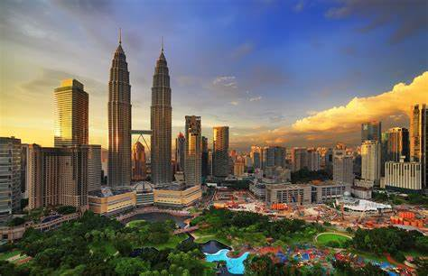
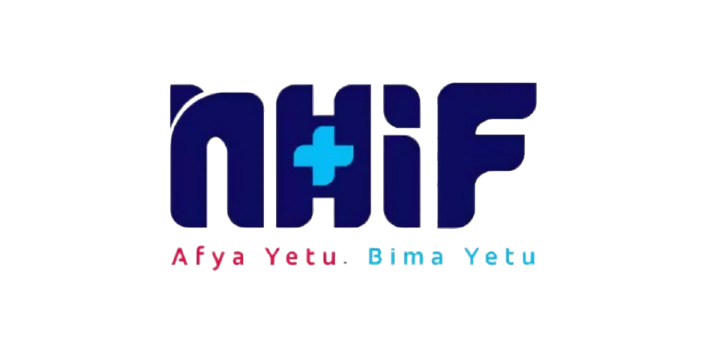
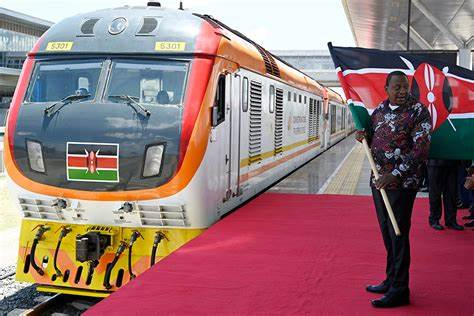
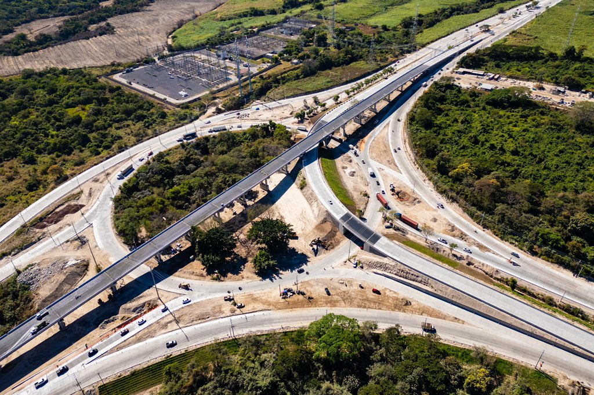
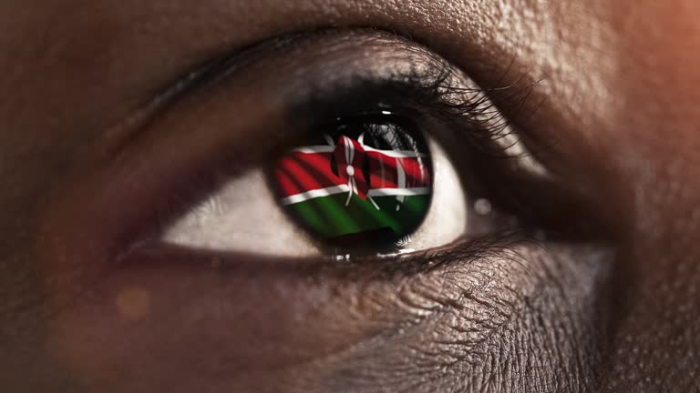
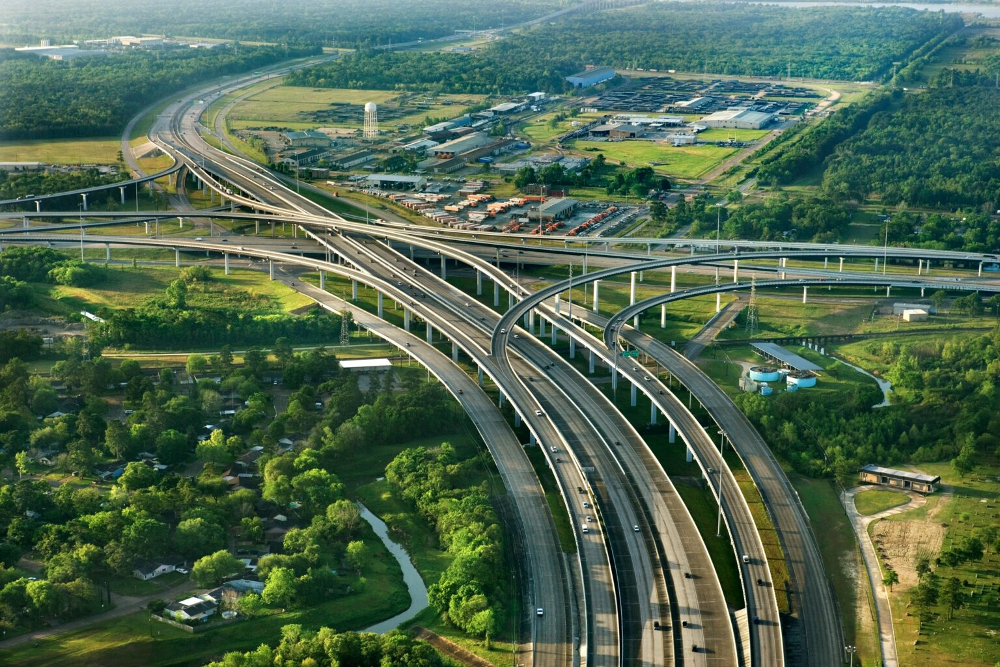
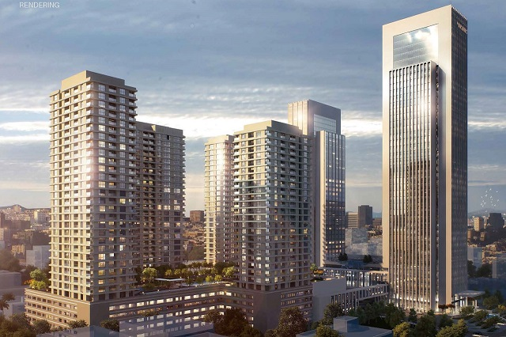
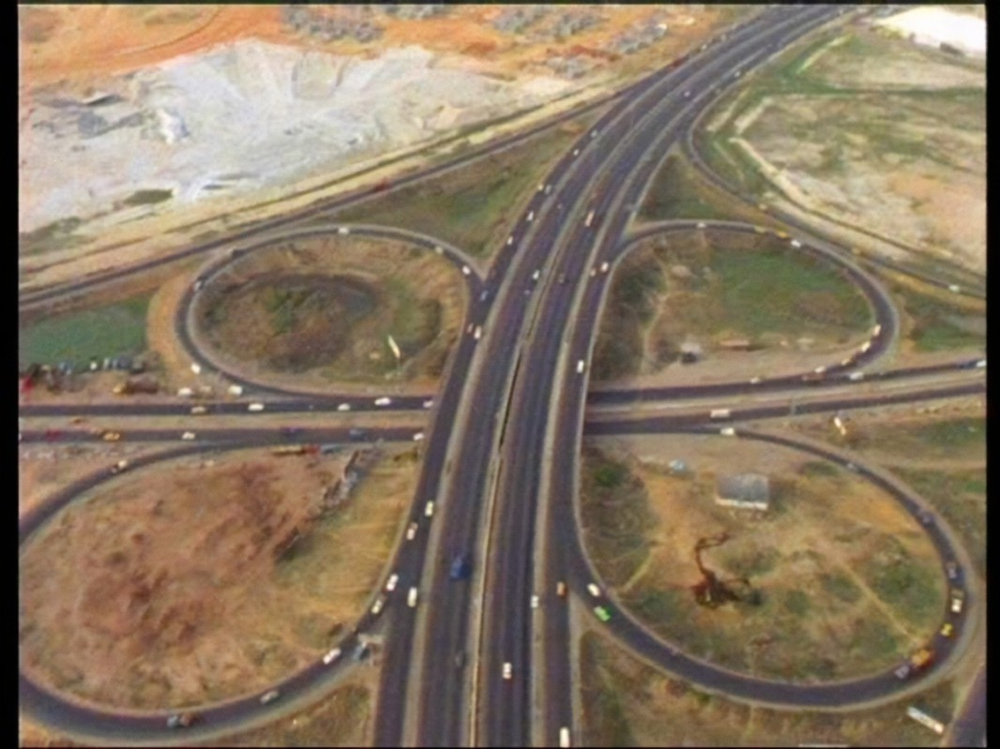

Track every shilling, every milestone, every breakthrough. A transparent window into Kenya's national and county development journey.

Construction of a modern 60,000-seater stadium along Ngong Road to host international sports events, concerts, and talent showcases. The facility will include a velodrome, indoor arena, and public park.

A world-class Global Trade Centre featuring luxury hotel, Grade A offices, conference facilities, and hospitality services in Nairobi's Upper Hill financial district.

A modern 50km multi-lane network connecting Nairobi to Thika, revolutionising urban mobility and fostering economic growth along the corridor.

Africa's Silicon Savannah — a purpose-built smart city designed to anchor Kenya's knowledge economy with data centres, university campuses, and innovation hubs.

Modernising Kenya's busiest 480km trade corridor with dual carriageway upgrades, smart traffic management, and integrated logistics infrastructure.

Kenya's flagship blueprint targeting a globally competitive, middle-income economy — spanning economic transformation, social equity, and governance reform.

Delivering 500,000 quality, affordable housing units across 15 counties with government-backed mortgage schemes for low-income Kenyan households.

Transforming Kenya's healthcare financing to achieve universal health coverage — expanded benefits, streamlined claims, and county health financing partnerships.

The 472km Standard Gauge Railway connecting Mombasa and Nairobi, transforming freight logistics and passenger transport across the country.

Upgrading rural and semi-urban access roads in Machakos County to all-weather tarmac, opening agricultural corridors and improving emergency access.

Construction of the first three berths of the Lamu Port, designed to facilitate trade with landlocked neighbors and open up Northern Kenya's economic potential.

A massive irrigation project aimed at making Kenya food secure by bringing 1 million acres under irrigation, focusing on model farm production and water infrastructure.

Upgrading the 84km road to a four-lane dual carriageway, part of the Great North Road linking Kenya to Ethiopia and improving trade transit.

A strategic transport link connecting Mombasa West to the South Coast via bridges, easing Likoni ferry congestion and unlocking the Special Economic Zone.

Scaling up national electricity access by connecting millions of households to the grid, transforming lives in rural and peri-urban Kenya.
Solving the coastal water crisis by supplying 186 million liters of water daily to Mombasa and Kwale, while supporting local irrigation schemes.
Restoring Kisumu as a premier regional trade hub by modernizing port infrastructure and shipyards to serve the East African Community.
A major transit expansion project providing a reliable rail link between Nairobi and Ngong to ease traffic congestion and improve urban mobility.

